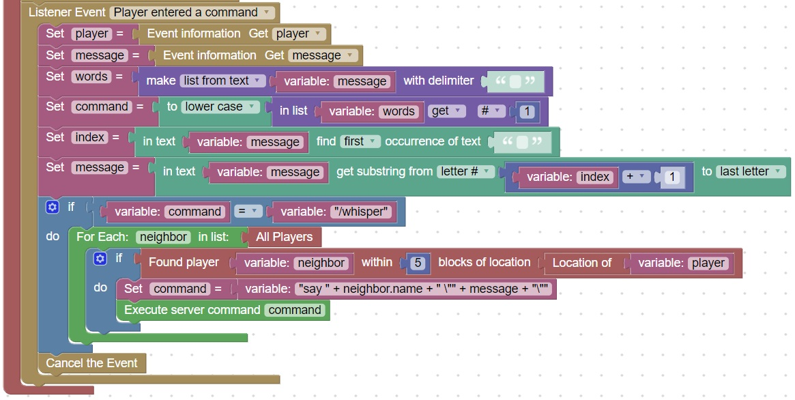

Whisper Command
In your game, the player will not be operators, so they will not be able to issue any server commands
However, you can intercept their commands and execute ones that fit your game
This code will intercept a new command: /whisper and send the server command /say to each player within 5 blocks of the sender
